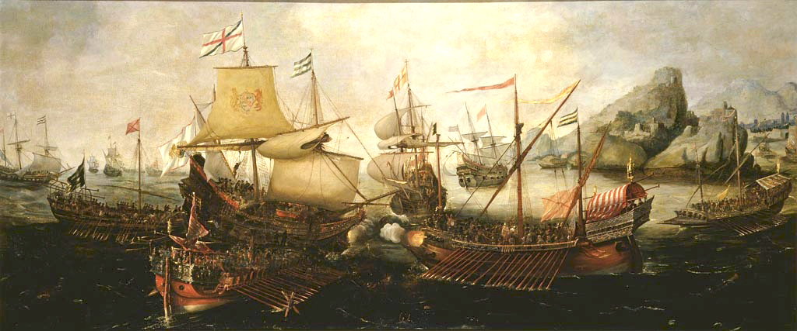
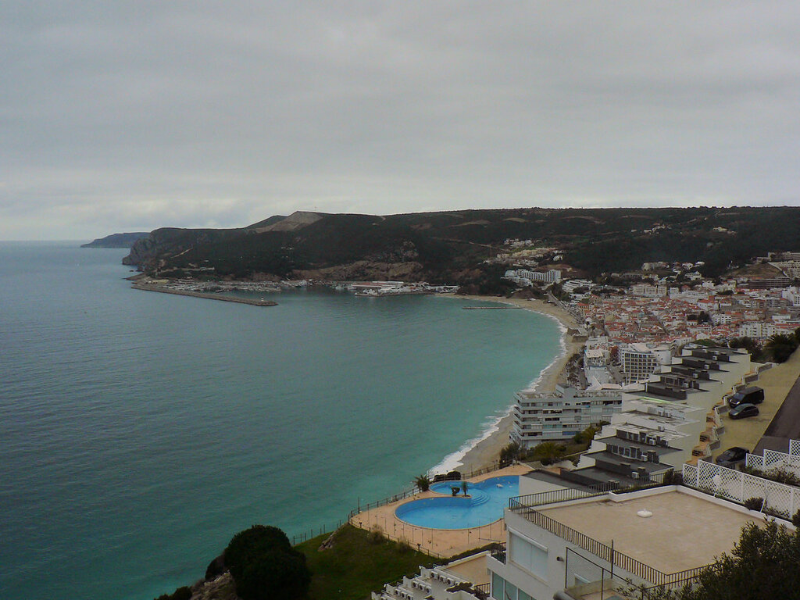
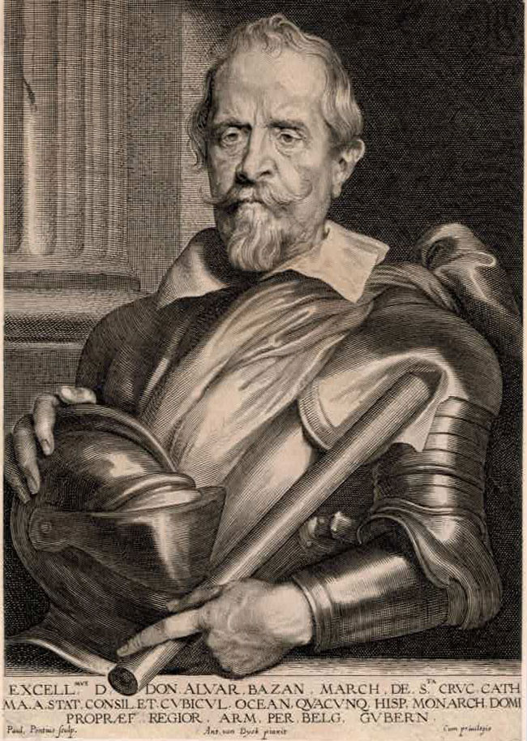
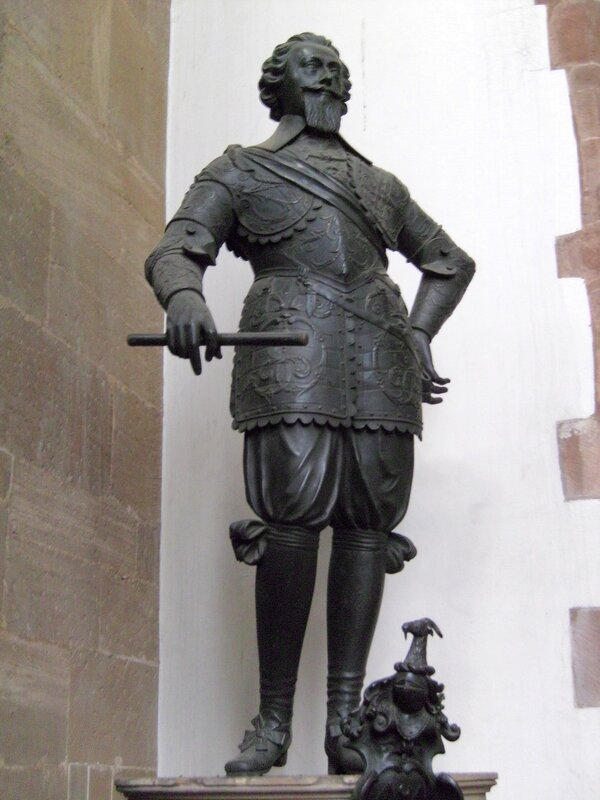
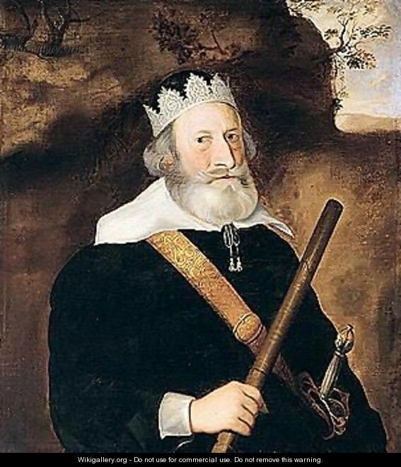
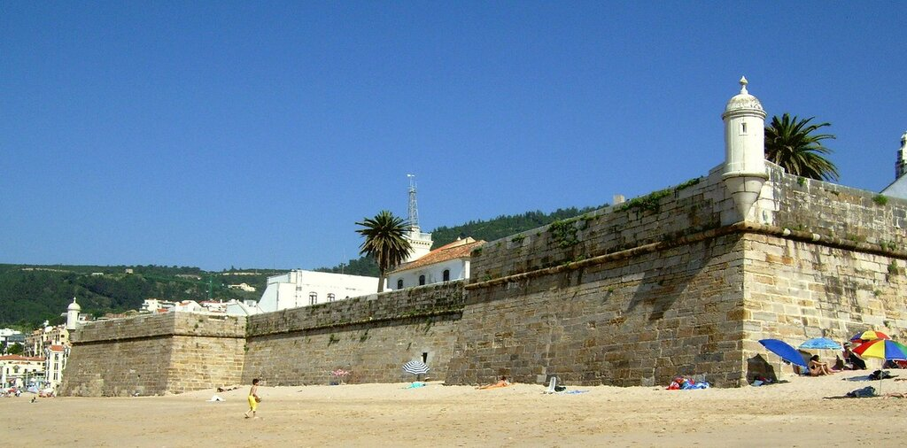
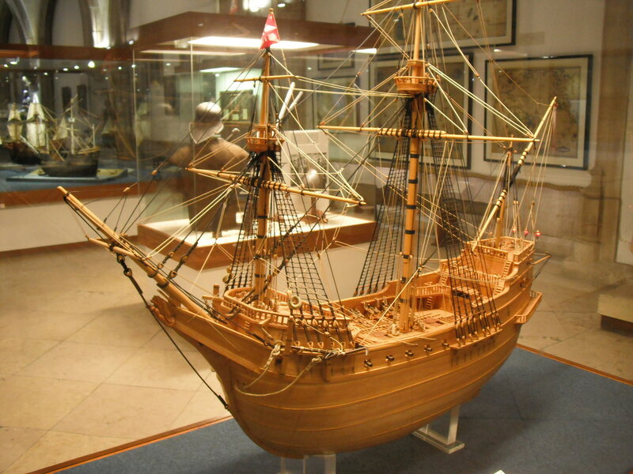

Спинола: что такое не везет
Война и реванш ―
их пароль,
и нападенье ―
их принцип.
Н. Н. Ушаков. В двенадцать часов по ночам...

Битва в заливе Сезимбра, июнь 1602 г. Художник Hendrick Cornelisz Vroom, картина находится в посольстве Великобритании в Лиссабоне.
В декабре 1601 года стало окончательно ясно, что ирландская экспедиция короля Испании провалилась. Какой уже раз стихия была против Испании. Неблагоприятные ветры воспрепятствовали своевременному прибытию поддержки с моря и Дон Хуан дел Агила потерпел поражение в Кинсале.
Оставалась последняя надежда досадить англичанам – принять план Спинолы. В марте 1602 года Федерико прибывает в Мадрид с намерением убедить короля в необходимости, как он сам пишет, «захватить один-два или более английских портов , укрепить их, превратить в наш плацдарм, опираясь на который наказать королеву и всех еретиков и бунтовщиков против Святого Апостольского престола, взять под защиту Его Величества всех правоверных христиан-католиков, освободить их от притеснений и тирании Королевы и ее министров.» Спинола был твердо уверен, что только галеры могут стать инструментом для достижения намеченных целей. В этом его поддерживал ветеран испанского флота Дон Диего де Брочеро (мы писали о нем), также предложивший свои услуги для того, чтобы захватить английское побережье с дюжиной галер и хорошими солдатами на них.
В конце концов все планы были согласованы, необходимое материальное обеспечение для новой экспедиции было получено и Спинола отправился в путь из порта Санлукар-де-Баррамеда на самом юге Испании. Но едва Федерико с восемью тяжело гружеными галерами и отрядом испанской пехоты численностью 1500 человек достиг Лиссабона, как тревожное сообщение заставило его лечь на обратный курс. Огромная португальская каракка São Valentinho водоизмещением 1700 тонн, следовавшая из Ост-Индии в Лиссабон с грузом на полтора миллиона дукатов, спасаясь от английской эскадры, стала на якорь под защитой 12 пушек крепости Сезимбра.

Современный вид залива Сезимбра. Фото Paulo Juntas.
Экипаж каракки свалила неизвестная болезнь, для его замены на судно загрузили 400 добровольцев, кроме того на берегу сосредоточилось до 10 тыс. солдат. Однако на море у вице-короля Португалии было только три галеры под командованием Альваро де Басана, 2-го маркиза де Санта-Крус.

Портрет адмирала Альваро де Басана, 2-го маркиза де Санта-Крус Гравюра с работы Ван Дейка
Спинола получает приказ следовать на выручку Сан Валентино. На рассвете 12 июня (по новому стилю; англичане, как известно, на новый стиль перешли с 1752 года, поэтому датировка событий в их литературе отличается) все одиннадцать галер Спинолы и де Санта-Круса выстроились в линию, прикрыв стоящую на якоре каракку с запада.
Возникает вопрос: откуда здесь появились военные корабли англичан и кто ими командовал? Если без условностей, то это были два морских пирата Sir Richard Leveson and Sir William Monson, нанятых английской короной для того, чтобы вести войну на морских коммуникациях поблизости от основных баз Испании. Главным был конечно Ливсон. (я не нашел убедительного документа, который помог бы правильно написать фамилию моряка по-русски. Судя по этому фрагменту: The family name is pronounced /ˈluːsən/ loosen, and could be rendered in many ways in the 16th century, including Lewson, Luson and Lucen, надо бы писать Лусен, но рука не поднимается.) Корсар и сын корсара, получивший от отца лишь огромные долги, он в 1587 году удачно женился на дочери лорда-адмирала Говарда Маргарет, после чего карьера его быстро пошла в гору.(У меня даже иногда закрадывается подозрение, что биография молодого Ливсона использована в истории Пиратов Карибского моря, так уж все сходится). В сражении против Непобедимой Армады он был всего лишь добровольцем, но уже при Кадисе в 1596 году командовал кораблем Truelove, а на следующий год получил звание вице-адмирала в Азорской экспедиции английского флота.

Памятник Ричарду Ливсону в Вулвергемптоне. Скульптор Hubert Le Sueur.
В 1599 году Ливсон командовал эскадрой, сформированной для перехвата галер Спинолы, следовавших во Фландрию, но поставленной задачи не решил, за что подвергся жесткой критике. Желание отомстить строптивому генуэзцу не утихало, и вот, три года спустя, представилась возможность осуществить его.
Второй участник сражения – вице-адмирал Уильям Монсон. Пират (участник многих экспедиций под командованием Джорджа Клиффорда (графа Камберленда), Френсиса Дрейка и Эссекса), и участник целого ряда сражений на кораблях английского королевского флота, в том числе сражения с Непобедимой Армадой, будущий адмирал в 1591 году угодил в плен неподалеку от берегов Испании и был отправлен гребцом на галеры. Игра судьбы, но попал он на галеру Leva , командовал которой упомянутый выше маркиз де Санта-Крус. Можно только представить себе, что испытал Монсон, когда он увидел среди галер у стен Сезимбры свою бывшую тюрьму. В 1592 году при невыясненных обстоятельствах Монсон получил свободу. Жан Рогожинский в своей «Энциклопедии пиратов» пишет по этому поводу: «Известно, что Монсон не заплатил никакого выкупа и, по-видимому, получил свободу, согласившись стать испанским агентом».

Портрет сэра Уильяма Монсона (1569-1643) , мастерская Корнелиса Янсенса ван Кёлена.
В 1602 году, накануне рассматриваемых нами событий, Монсон командовал одним из девяти кораблей, посланных на перехват Вест-Индского Казначейского флота испанцев, но задачу эту выполнить не сумел: испанцам удалось прорваться. Вот в результате всего этого стечения обстоятельств в начале июня Монсон, как и Ливсон, оказался под стенами крепости Сантьяго де Сезимбра.

Видимо, судьбе было угодно свести в одном месте двух обиженных испанцами приватиров, жаждущих мести.
Эскадры Ливсона (который осуществлял общее командование) и Монсона к этому времени были сильно потрепаны, полностью боеспособными осталось не более пяти кораблей. Получив информацию о беспомощном корабле с ценным грузом, 12 июня англичане подтянулись к Сезимбре. Но на море царил полный штиль, и адмиралы решили не искушать судьбу, отложив атаку на следующее утро. Конечно, Спинола мог воспользоваться безветрием и атаковать англичан еще ночью, но целью тщеславного генуэзца были не несколько галеонов противника, а сама Англия, поэтому, не желая рисковать своими галерами, он отказался от активных действий.
На рассвете 13 июня стало возможным оценить расстановку сил. Англичане были представлены тремя галеонами Warspite (648 тонн, Ливсон), Garland (530 тонн, Монсон) , Dreadnought (360 тонн, Мэнуэринг) от 32 до 38 орудий на каждом, и двумя более легкими Nonpareil, Adventure, которых сопровождали два захваченных ранее в качестве приза транспортных судна. Испанская сторона имела, помимо каракки Сан-Валентино, одиннадцать галер: Christopher (Альваро де Басан), St Lewis (Спинола), Forteleza, Trinidad, St John, Leva, Occasion, San Jacinto, Lazar, Padilla и San Felipe. Боевые порядки сторон не предусматривали никаких иных форм начала боя кроме как артиллерийской дуэли на сравнительно большой дистанции. Ясно, что дуэль эту испанская сторона проиграла. На галерах отмечались серьезные разрушения, экипажи некоторых кораблей дрогнули, в том числе и на галере де Басана. И лишь стойкость Спинолы давала пример остальным продолжать сражение. Под губительным огнем Garland’а, который стал на якорь и вел огонь попеременно то одним, то другим бортом, строй галер начал отходить в глубь залива. Ливсон на Warspite’е совершил несколько ошибок при маневрировании, в результате потерял ветер и был снесен с рейда, несмотря на все усилия команды не допустить выхода галеона из боя. Сам Ливсон на корабельном баркасе на веслах отправился на борт Garland’а, где продолжил управлять боем.
Когда галеры Спинолы потеряли строй, мелкосидящий английский Dreadnought пошел на сближение с ними и своими одиннадцатью полукулевринами и десятью сакрами начал методически добивать корабли противника. Все три галеры де Басана были сильно повреждены, сам маркиз получил тяжелое ранение и не смог далее командовать боем. Монсон на Garland’е при поддержке Nonpareil сосредоточил огонь на галерах Спинолы, в результате чего две из них, Trinidad и Occasion, груженые маслом, загорелись и вскоре затонули. Капитан Occasion’а был захвачен в плен. Море было заполнено гребцами с разбитых галер, которые плыли к английским кораблям. Поврежденные галеры де Басана вышли из боя и взяли курс на север.
Расправившись с галерами, аглийские галеоны окружили каракку Сан Валентино.

Модель каракки Madre de Deus, которая по конструкции подобна каракке Сан Валентино. Морской музей, Лиссабон
Галеры Спинолы, гребцы которых были смертельно истощены боем и частично уничтожены, не могли уже оказать никакой помощи каракке. Не было поддержки и со стороны крепостной артиллерии: огонь с Nonpareil, Adventure и частично с Warspite заставил ее замолчать уже через час.
Не встречая больше препятствий, Garland и Dreadnought пришвартовались к правому и левому бортам каракки, после чего абордажные партии высадились на корабль, практически не встретив сопротивления. Монсон предложил переговоры о сдаче корабля. Когда он поднялся на его борт, многие испанские офицеры узнали в нем своего бывшего пленника.
Капитан каракки Don Diego Lobo предложил сдать англичанам только груз, оставив корабль себе. Однако Монсон пошел лишь на освобождение экипажа, каракка же была взята на буксир и уведена в Англию. Англичане потеряли в результате сражения всего несколько моряков, в то время как потери испанцев превысили восемь сотен человек.
Королева вручила Монсону и Ливсону по 3000 фунтов стерлингов в качестве награды. Вице-король Португалии приговорил капитана каракки к смертной казни, но благодаря помощи своей сестры ему удалось бежать и укрыться в Италии. Маркиз де Санта-Крус оправился от ранения и продолжал командовать галерами Неаполитанского королевства. Спинола, выведя свои галеры из боя с половиной оставшихся гребцов дошел до Лиссабона. Там он повесил трех человек из экипажа одной из галер за убийство своего капитана во время боя. Федерико Спинола не отказался от своего плана. несмотря на попытки герцога Лермы, первого министра испанского короля, отговорить его от этой затеи. Пополнив состав гребцов и заменив весла своих галер, Спинола 9 августа 1602 года продолжил путь на север. Но это уже тема для следующего рассказа.